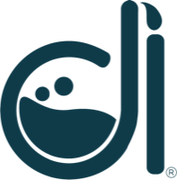
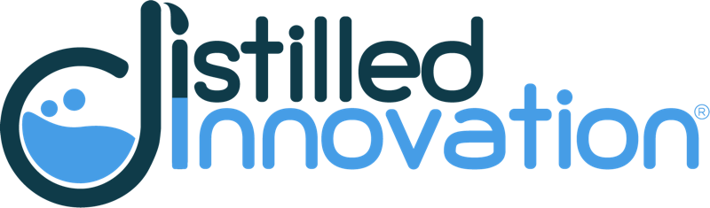

La situación de partida y por qué vale la pena.
¿Cómo podríamos [verbo] para [quién] de modo que [resultado]? No menciones la solución.
Qué se ha intentado, qué hacen otros, fuerzas del Zoom Out que lo sustentan.
Específico, medible, alcanzable, relevante y con plazo.
Para quién es y a quién afecta.
Qué cambia si lo resolvemos y cómo lo notamos (señales medibles).
Claridad __ · Apertura __ · Foco __ · Coherencia __ (1–5)

distilledinnovation.co¿Qué conecta las señales más críticas?
3 a 5 pasos de la experiencia
Fuerza del entorno
Del más al menos riesgoso
Número + plazo
Datos, no opiniones
☐ Seguir ☐ Ajustar ☐ Detener
| Oportunidad · nivel · horizonte | Responsable y acción en 7 días | Hito 3 meses | Hito 6 meses | Decisión al año | Indicador y criterio | Límite horas / $ |
|---|---|---|---|---|---|---|